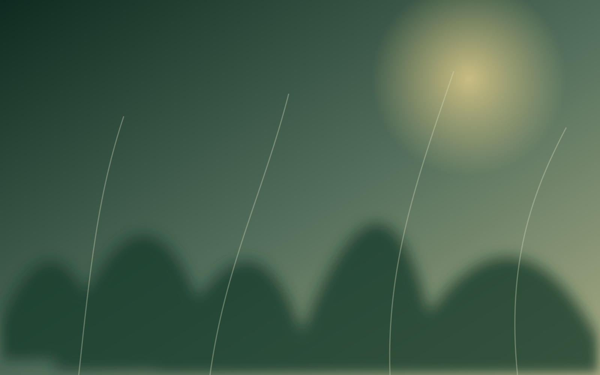

ORIGINALNI SEZONSKI VIDEO
01 · JESEN
DŽEPNE ŠUME · ŽABALJ
Džepna šuma nije samo skup stabala. Ona je hlad koji tek dolazi, povratak ptica, življi grad i komad budućnosti koji možemo posaditi danas.
ŽIVA, STVARNA, NAŠA

ORIGINALNA FOTOGRAFIJA · ŽABALJU Žablju učimo zajedno sa šumom: kroz mraz, sušu, slatinasto zemljište, nove izdanke i svaki mali znak da se život vraća.
MALI GEST. DUG ŽIVOT.
Vaša podrška pomaže da mlade biljke dobiju vodu, malč, negu i novu šansu kada je priroda surova.
Plaćanje će biti aktivirano nakon ugovaranja sigurnog platnog servisa. Podaci kartice neće se čuvati na ovom sajtu.
GDE ODLAZI PODRŠKA
TRAG PODRŠKE
Ne kao potvrdu vlasništva, već kao dokaz da ste pomogli jednom živom sistemu. Na njemu ostaju vaše ime, datum podrške, šuma kojoj ste pomogli i priče koje tek dolaze.
Pogledajte Pisma iz šume↘PISMA IZ ŠUME
Dokumentujemo ono što se zaista događa: prve listove, mraz, kišu, sušu, povratak ptica i ljude koji dolaze da neguju.
ZA KOMPANIJE
Podržite postojeću šumu, organizujte dan sadnje sa zaposlenima ili zajedno razvijmo novu džepnu šumu i priču koju možete pratiti godinama.
TRANSPARENTNOST
Ovde će biti objavljeni potvrđeni iznosi podrške, način utroška sredstava, datumi nege i sadnje, fotografije i godišnji pregled. Bez izmišljenih brojača i bez neproverljivih obećanja.
KO STOJI IZA ŠUME
Džepne šume razvija Creativespot zajedno sa stručnim i lokalnim partnerima. Prva živa laboratorija u Žablju nije nastala kao kulisa, već kao mesto učenja, pokušaja, grešaka i stvarnog rasta.
SVE POČINJE JEDNIM IZBOROM
Jedan mali izbor danas može godinama stvarati hlad, život i prostor za povratak prirode.
Postani Čuvar života